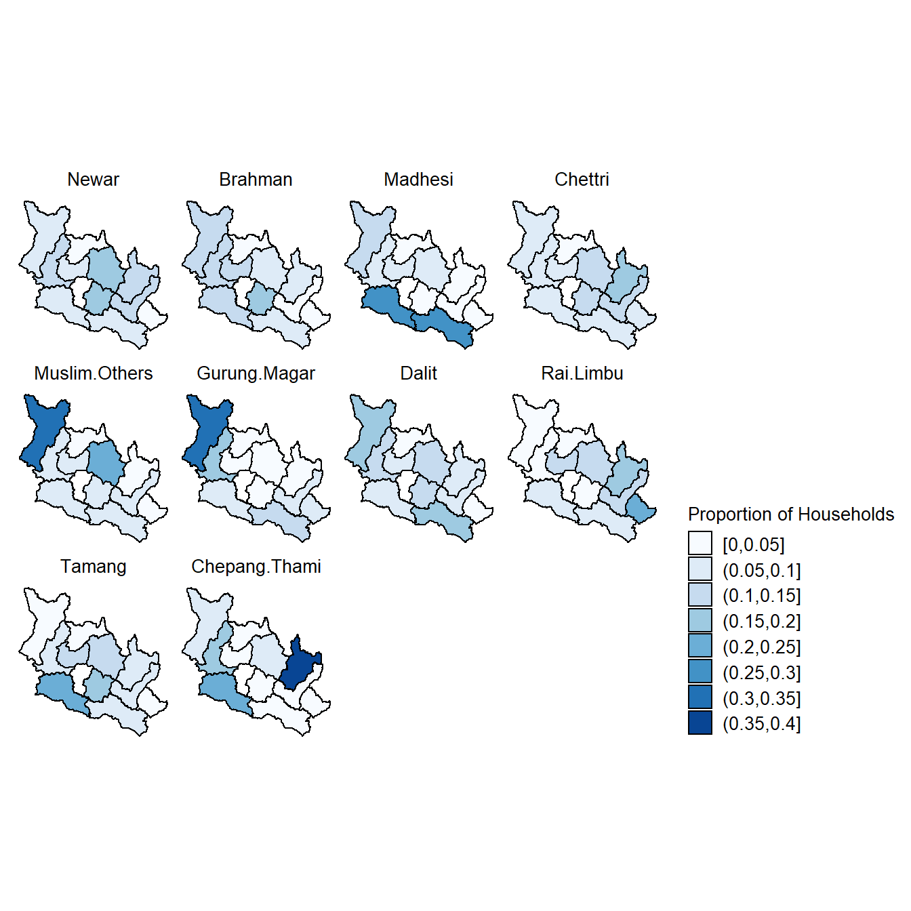

We obtained the geographical coordinates of Nepal’s administrative units (District Level: 77 Districts) in GeoJSON format from the Open Knowledge Nepal data portal (http://localboundries.oknp.org/).
library("stringr")
library("dplyr")
library("reshape2")
library("geojsonio")
library("broom")
library("ggplot2")
library("ggthemes")
library("RColorBrewer")dir.wrk <- getwd()
dir.data <- file.path(dir.wrk, "data/data_household")
dir.annot <- file.path(dir.wrk, "data/data_annotations")
dir.output <- file.path(dir.wrk, "data/data_processed")
dir.maps <- file.path(dir.wrk, "data/data_maps")file.geo <- file.path(dir.maps, "nepal_district.geojson")
file.dat1 <- file.path(dir.output, "maps_tbl_district_total_household.tsv")
file.dat2 <- file.path(dir.output, "maps_tbl_district_fueltype_ratio.tsv")
file.dat3 <- file.path(dir.output, "maps_tbl_district_ethnicity_ratio.tsv")dat1 <- read.delim(file.dat1, header = TRUE, stringsAsFactors = FALSE)
head(dat1)## id Freq
## 1 Dhading 86345
## 2 Dolakha 70495
## 3 Gorkha 75883
## 4 Kavrepalanchok 91895
## 5 Makwanpur 88365
## 6 Nuwakot 75429geo <- geojsonio::geojson_read(file.geo, method="local", parse=TRUE, what="sp")
geo77 <- broom::tidy(geo, region="DISTRICT")
geo11 <- subset(geo77, geo77$id %in% dat1$id)
head(geo11)## # A tibble: 6 x 7
## long lat order hole piece group id
## <dbl> <dbl> <int> <lgl> <fct> <chr> <chr>
## 1 84.7 27.9 68752 FALSE 1 Dhading.1 Dhading
## 2 84.7 27.9 68753 FALSE 1 Dhading.1 Dhading
## 3 84.7 27.9 68754 FALSE 1 Dhading.1 Dhading
## 4 84.7 27.9 68755 FALSE 1 Dhading.1 Dhading
## 5 84.7 27.9 68756 FALSE 1 Dhading.1 Dhading
## 6 84.7 27.9 68757 FALSE 1 Dhading.1 Dhading# PREPARE DATA ---
d <- geo77
d$Status <- 0
d$Status[which(d$id %in% dat1$id)] <- 1
d$Status <- as.factor(d$Status)
# DEFINE COLORS ---
cpalette.grp <- c("#FFFFFF","#BDBDBD")
# PLOT
map77 <- ggplot(data=d, aes(x=long, y=lat, group=group)) +
geom_path() +
geom_polygon(aes(fill=Status), color="#000000") +
scale_fill_manual(values=cpalette.grp) +
coord_equal() +
theme_map() +
theme(
plot.title = element_text(size = 10, color="#000000", hjust=0.5),
#aspect.ratio = 1,
panel.grid.major = element_blank(),
panel.grid.minor = element_blank(),
axis.ticks = element_blank(),
strip.text = element_text(size = 10, color="#000000", hjust=0.5),
strip.background = element_rect(fill="#FFFFFF", color="#FFFFFF"),
panel.background = element_rect(fill="#FFFFFF", color=NA),
legend.text = element_text(size = 10, color="#000000"),
legend.title = element_blank(),
legend.key.size = unit(0.5, "cm"),
legend.position = "none") +
guides(fill=guide_legend(title="No. of Households"))
map77dat1 <- read.delim(file.dat1, header = TRUE, stringsAsFactors = FALSE)
# CONVERT TO DISCRETE DATA ---
dm <- mutate(dat1, Group = cut(Freq, seq(10000, 1e+05, 10000), include.lowest = TRUE)) %>%
group_by(Group)
group_ratio <- levels(dm$Group)
# MERGE DATA ---
df <- merge(geo11, dm, by = "id")
head(df)## id long lat order hole piece group Freq
## 1 Dhading 84.73974 27.94036 68752 FALSE 1 Dhading.1 86345
## 2 Dhading 84.73970 27.94059 68753 FALSE 1 Dhading.1 86345
## 3 Dhading 84.73969 27.94087 68754 FALSE 1 Dhading.1 86345
## 4 Dhading 84.73980 27.94221 68755 FALSE 1 Dhading.1 86345
## 5 Dhading 84.73977 27.94336 68756 FALSE 1 Dhading.1 86345
## 6 Dhading 84.73981 27.94370 68757 FALSE 1 Dhading.1 86345
## Group
## 1 (8e+04,9e+04]
## 2 (8e+04,9e+04]
## 3 (8e+04,9e+04]
## 4 (8e+04,9e+04]
## 5 (8e+04,9e+04]
## 6 (8e+04,9e+04]map1 <- ggplot(data=df, aes(x=long, y=lat, group=group, fill=Group)) +
geom_path() +
geom_polygon(aes(fill=Group), color="#000000") +
scale_fill_brewer(palette = "Blues") +
coord_equal() +
theme_map() +
theme(
plot.title = element_text(size = 10, color="#000000", hjust=0.5),
aspect.ratio = 1,
panel.grid.major = element_blank(),
panel.grid.minor = element_blank(),
axis.ticks = element_blank(),
strip.text = element_text(size = 10, color="#000000", hjust=0.5),
strip.background = element_rect(fill="#FFFFFF", color="#FFFFFF"),
panel.background = element_rect(fill="#FFFFFF", color=NA),
legend.text = element_text(size = 10, color="#000000"),
legend.title = element_text(size = 10, color="#000000"),
legend.key.size = unit(0.5, "cm"),
legend.position = "right") +
guides(fill=guide_legend(title="No. of Households", ncol=1))
map1dat2 <- read.delim(file.dat2, header = TRUE, stringsAsFactors = FALSE)
head(dat2)## id Electricity Gobar.Gas Kerosene LP.Gas Others
## 1 Dhading 0.08465608 0.205064154 0.05714286 0.10945537 0.06768559
## 2 Dolakha 0.14285714 0.005109572 0.11904762 0.08824108 0.13537118
## 3 Gorkha 0.08994709 0.174520268 0.07619048 0.09196958 0.10698690
## 4 Kavrepalanchok 0.07936508 0.199500397 0.15238095 0.19404179 0.04148472
## 5 Makwanpur 0.08994709 0.227546270 0.11428571 0.24897251 0.16157205
## 6 Nuwakot 0.11111111 0.045304871 0.09523810 0.07829843 0.05676856
## Wood
## 1 0.11518469
## 2 0.09625774
## 3 0.10178191
## 4 0.11323104
## 5 0.10059783
## 6 0.10454018# CONVERT TO DISCRETE DATA ---
dm <- reshape2::melt(dat2, id.vars = "id", variable.name = "FuelType", value.name = "Ratio")
dm <- mutate(dm, RatioGroup = cut(Ratio, seq(0, 0.25, 0.05), include.lowest = TRUE)) %>%
group_by(RatioGroup)
group_ratio <- levels(dm$RatioGroup)
type_fuel <- c("Wood", "LP.Gas", "Gobar.Gas", "Kerosene", "Electricity", "Others")
# MERGE DATA ---
df <- merge(geo11, dm, by = "id")
# FACTORIZE DATA ---
df$FuelType <- factor(df$FuelType, levels = type_fuel)
df$RatioGroup <- factor(df$RatioGroup, levels = group_ratio)
head(df)## id long lat order hole piece group FuelType
## 1 Dhading 84.73974 27.94036 68752 FALSE 1 Dhading.1 Electricity
## 2 Dhading 84.73974 27.94036 68752 FALSE 1 Dhading.1 Others
## 3 Dhading 84.73974 27.94036 68752 FALSE 1 Dhading.1 Wood
## 4 Dhading 84.73974 27.94036 68752 FALSE 1 Dhading.1 Kerosene
## 5 Dhading 84.73974 27.94036 68752 FALSE 1 Dhading.1 LP.Gas
## 6 Dhading 84.73974 27.94036 68752 FALSE 1 Dhading.1 Gobar.Gas
## Ratio RatioGroup
## 1 0.08465608 (0.05,0.1]
## 2 0.06768559 (0.05,0.1]
## 3 0.11518469 (0.1,0.15]
## 4 0.05714286 (0.05,0.1]
## 5 0.10945537 (0.1,0.15]
## 6 0.20506415 (0.2,0.25]map2 <- ggplot(data=df, aes(x=long, y=lat, group=group, fill=RatioGroup)) +
geom_path() +
geom_polygon(aes(fill=RatioGroup), color="#000000") +
scale_fill_brewer(palette = "Blues") +
facet_wrap(~FuelType, ncol=3, drop=FALSE, strip.position="top") +
coord_equal() +
theme_map() +
theme(
plot.title = element_text(size = 10, color="#000000", hjust=0.5),
aspect.ratio = 1,
panel.grid.major = element_blank(),
panel.grid.minor = element_blank(),
axis.ticks = element_blank(),
strip.text = element_text(size = 10, color="#000000", hjust=0.5),
strip.background = element_rect(fill="#FFFFFF", color="#FFFFFF"),
panel.background = element_rect(fill="#FFFFFF", color=NA),
legend.text = element_text(size = 10, color="#000000"),
legend.title = element_text(size = 10, color="#000000"),
legend.key.size = unit(0.5, "cm"),
legend.position = "right") +
guides(fill=guide_legend(title="Proportion of Households", ncol=1))
map2dat3 <- read.delim(file.dat3, header = TRUE, stringsAsFactors = FALSE)
head(dat3)## id Brahman Chepang.Thami Chettri Dalit
## 1 Dhading 0.13183869 1.992073e-01 0.09895938 0.13744536
## 2 Dolakha 0.06860788 3.570013e-01 0.18636705 0.06896213
## 3 Gorkha 0.11886990 5.221076e-02 0.06745067 0.17466477
## 4 Kavrepalanchok 0.19493279 8.884029e-04 0.10279011 0.10281694
## 5 Makwanpur 0.12246981 2.473860e-01 0.07565513 0.05270396
## 6 Nuwakot 0.13789929 6.833869e-05 0.07101362 0.06762366
## Gurung.Magar Madhesi Muslim.Others Newar Rai.Limbu Tamang
## 1 0.18856305 0.06368421 0.09718067 0.11869743 0.030502227 0.08889155
## 2 0.02672287 0.02500000 0.02683347 0.10158448 0.170972201 0.05719957
## 3 0.30926197 0.12394737 0.31012601 0.08608953 0.039318077 0.01146000
## 4 0.04920577 0.03947368 0.08258544 0.16717928 0.007617877 0.15064451
## 5 0.06055718 0.27210526 0.05439217 0.08283894 0.072277684 0.20192754
## 6 0.04849707 0.08394737 0.06055661 0.08180400 0.105882353 0.14936267# CONVERT TO DISCRETE DATA ---
dm <- reshape2::melt(dat3, id.vars = "id", variable.name = "Ethnicity", value.name = "Ratio")
dm <- mutate(dm, RatioGroup = cut(Ratio, seq(0, 0.4, 0.05), include.lowest = TRUE)) %>%
group_by(RatioGroup)
group_ratio <- levels(dm$RatioGroup)
type_ethnicity <- c("Newar", "Brahman", "Madhesi", "Chettri", "Muslim.Others",
"Gurung.Magar", "Dalit", "Rai.Limbu", "Tamang", "Chepang.Thami")
# MERGE DATA ---
df <- merge(geo11, dm, by = "id")
# FACTORIZE DATA ---
df$Ethnicity <- factor(df$Ethnicity, levels = type_ethnicity)
df$RatioGroup <- factor(df$RatioGroup, levels = group_ratio)
head(df)## id long lat order hole piece group Ethnicity
## 1 Dhading 84.73974 27.94036 68752 FALSE 1 Dhading.1 Brahman
## 2 Dhading 84.73974 27.94036 68752 FALSE 1 Dhading.1 Muslim.Others
## 3 Dhading 84.73974 27.94036 68752 FALSE 1 Dhading.1 Rai.Limbu
## 4 Dhading 84.73974 27.94036 68752 FALSE 1 Dhading.1 Madhesi
## 5 Dhading 84.73974 27.94036 68752 FALSE 1 Dhading.1 Tamang
## 6 Dhading 84.73974 27.94036 68752 FALSE 1 Dhading.1 Gurung.Magar
## Ratio RatioGroup
## 1 0.13183869 (0.1,0.15]
## 2 0.09718067 (0.05,0.1]
## 3 0.03050223 [0,0.05]
## 4 0.06368421 (0.05,0.1]
## 5 0.08889155 (0.05,0.1]
## 6 0.18856305 (0.15,0.2]map3 <- ggplot(data=df, aes(x=long, y=lat, group=group, fill=RatioGroup)) +
geom_path() +
geom_polygon(aes(fill=RatioGroup), color="#000000") +
scale_fill_brewer(palette = "Blues") +
facet_wrap(~Ethnicity, ncol=4, drop=FALSE, strip.position="top") +
coord_equal() +
theme_map() +
theme(
plot.title = element_text(size = 10, color="#000000", hjust=0.5),
aspect.ratio = 1,
panel.grid.major = element_blank(),
panel.grid.minor = element_blank(),
axis.ticks = element_blank(),
strip.text = element_text(size = 10, color="#000000", hjust=0.5),
strip.background = element_rect(fill="#FFFFFF", color="#FFFFFF"),
panel.background = element_rect(fill="#FFFFFF", color=NA),
legend.text = element_text(size = 10, color="#000000"),
legend.title = element_text(size = 10, color="#000000"),
legend.key.size = unit(0.5, "cm"),
legend.position = "right") +
guides(fill=guide_legend(title="Proportion of Households", ncol=1))
map3